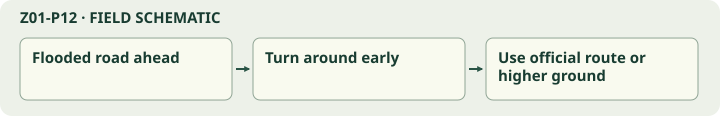

Z01-P12 · Survival fundamentals
Turn back at a flooded route
Preserve an evacuation option when a familiar road or foot route floods.
When it applies · Rising or standing floodwater blocking a road, path or crossing.
Equipment · Current emergency directions and a map for alternatives if available.

Actions
- Turn around before entering floodwater. Its depth and force may be difficult to judge and the road surface can be damaged.[T07]
- Check local evacuation instructions and choose an official, open alternate route or safe higher location. Avoid relying on a previous crossing or another vehicle's tracks.[T07, ED]
- Report your updated position and route to the appropriate contact when you can. Call for emergency help if trapped.[T07, T06]
Verify · A safe route is confirmed from reliable local information, or the group is waiting at a safer location.[T07, ED]
Stop or change course · Do not drive or walk around a closure into floodwater.[T07]
Evidence and editorial notes
- T06 · NPS · Outdoor Emergency Plan
- If you get lost or hurt; call for help · Outdoor US emergency
Communicate location, last known point, situation and needs. Stay put when unable to establish a safe route unless immediate danger requires movement.
Primary source · checked 2026-11-24 - T07 · FEMA · Flood Hazard Information Sheet
- How to stay safe when a flood threatens; take an active role · U.S. household flood preparedness and evacuation
Prepare contacts, medication and supplies. Heed evacuation instructions and avoid flooded roads.
Primary source · checked 2026-11-24
Source lineage · FEMA flood guidance; new manuscript.